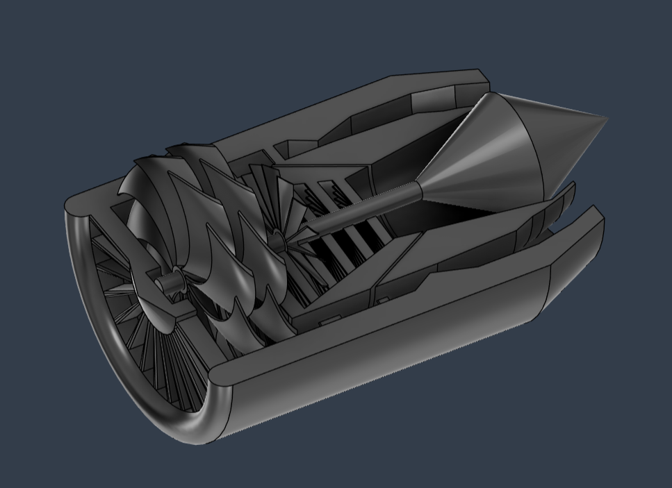
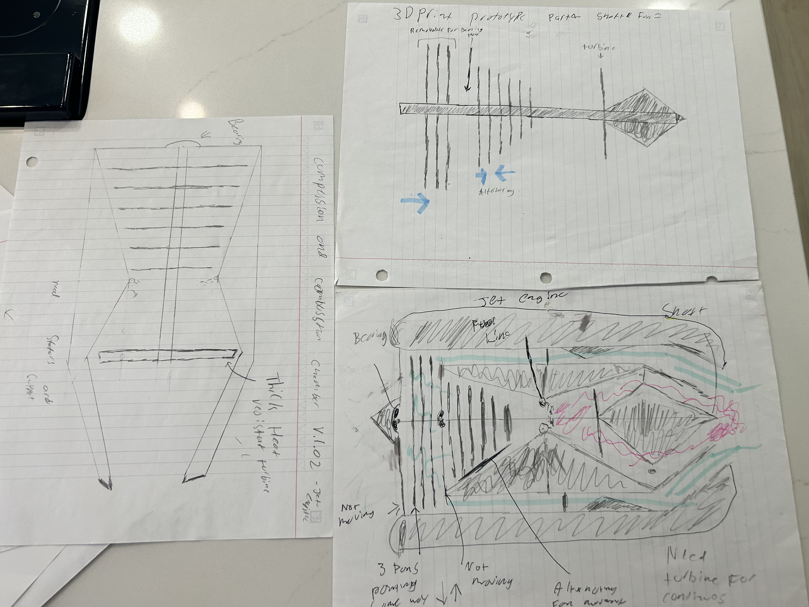
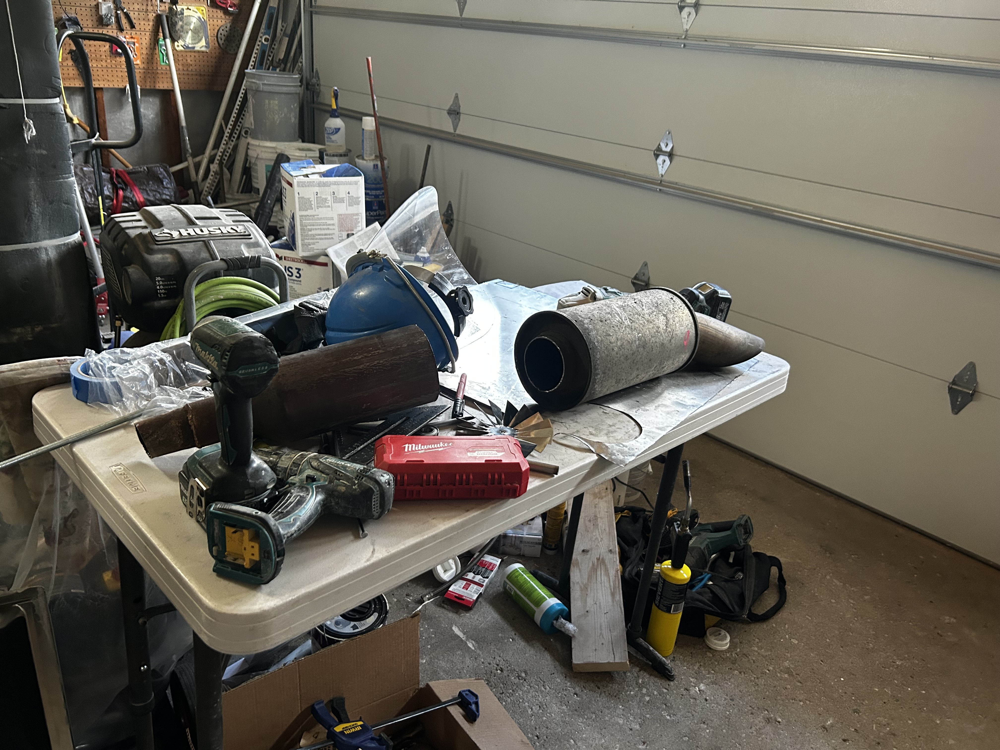

I challeneged myself to build a working turbofan jet engine from scratch, using only materials I could source locally and tools I had access to. The project had to be fit within a budget of $150.

Like most great projects, it started late at night when I couldn't sleep. I stumbled across a guy building a jet engine in
his garage on YouTube and was instantly hooked, I watched every single one of his videos and read through every comment I could
find. I quickly realized he had tools I didn't, like a lathe and machining equipment, but I didn't let that stop me. I just had to get
creative about how I made each part.
Beyond YouTube I found forums and online communities where people shared their own builds, tips, and troubleshooting advice, which was
invaluable when I hit specific challenges. I also dug into the basic principles of jet engine design, how thrust is generated, how the components
work together, so I actually understood the mechanics behind what I was building rather than just copying what I saw."

"After researching, I took the design into CAD to model the engine and work through concepts I was struggling to visualize,
specifically how the bearings would support the weight of the shaft and how to maximize thrust. Once I had the model I 3D printed it,
and holding the real thing in my hands made everything click. I knew exactly what I needed to build.
I started by sourcing materials; bearings from an old ceiling fan, the outer and inner casing from a muffler at the scrapyard, and fan and compressor
blades cut from the faceplate of a stainless steel dishwasher. The only part I had to order was the drive shaft, which I got from McMaster-Carr since it
needed to be precise. From there it was cutting, welding, measuring, and assembling.
The build required several iterations. I ran into issues with the stators and bearings not being the right size and the fan
blades being unbalanced. I troubleshot each problem one by one, balancing the blades by trimming little by little until the rotation was smooth,
and eventually got it right."

In the end, I successfully built a working turbofan jet engine. Unfortunately the bearings seized up after the first run and I had to disassemble it, but I was
still incredibly proud of the result, seeing something I built from scratch actually run was an amazing feeling.
I learned a lot about jet engine design throughout the process and picked up technical skills I had no experience with before, like welding. In the future I
definitely want to revisit this project when I have access to proper machining tools. I'd love to build a more compact and efficient design, and maybe even try
to power a small model aircraft with it. Overall it was one of the best learning experiences I've had, and proof that with enough persistence you can build just
about anything, even with limited tools and a scrapyard for a parts store.